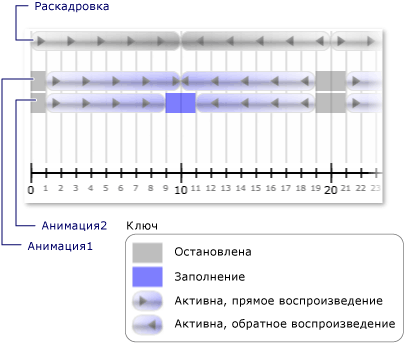

Практическое руководство. Получение уведомлений при изменениях состояния часов
Часов CurrentStateInvalidated событие возникает при его CurrentState становится недействительным, например при запуске или остановке часов. Можно зарегистрировать для этого события напрямую, используя Clock, или с помощью Timeline.
В следующем примере Storyboard и два DoubleAnimation объекты используются для анимации ширины двух прямоугольников. CurrentStateInvalidated Событие используется для прослушивания изменений состояния часов.
Пример
<Page xmlns="http://schemas.microsoft.com/winfx/2006/xaml/presentation"
xmlns:x="http://schemas.microsoft.com/winfx/2006/xaml"
x:Class="Microsoft.Samples.Animation.TimingBehaviors.StateExample"
Background="LightGray">
<StackPanel Margin="20">
<TextBlock
Name="ParentTimelineStateTextBlock"></TextBlock>
<TextBlock
Name="Animation1StateTextBlock"></TextBlock>
<Rectangle
Name="Rectangle01"
Width="100" Height="50" Fill="Orange" />
<TextBlock Name="Animation2StateTextBlock"></TextBlock>
<Rectangle
Name="Rectangle02"
Width="100" Height="50" Fill="Gray" />
<Button Content="Start Animations" Margin="20">
<Button.Triggers>
<EventTrigger RoutedEvent="Button.Click">
<BeginStoryboard>
<Storyboard RepeatBehavior="2x" AutoReverse="True"
CurrentStateInvalidated="parentTimelineStateInvalidated" >
<DoubleAnimation
Storyboard.TargetName="Rectangle01"
Storyboard.TargetProperty="Width"
From="10" To="200" Duration="0:0:9"
BeginTime="0:0:1"
CurrentStateInvalidated="animation1StateInvalidated"/>
<DoubleAnimation
Storyboard.TargetName="Rectangle02"
Storyboard.TargetProperty="Width"
From="10" To="200" Duration="0:0:8"
BeginTime="0:0:1"
CurrentStateInvalidated="animation2StateInvalidated" />
</Storyboard>
</BeginStoryboard>
</EventTrigger>
</Button.Triggers>
</Button>
</StackPanel>
</Page>
using System;
using System.Windows;
using System.Windows.Controls;
using System.Windows.Media;
using System.Windows.Media.Animation;
namespace Microsoft.Samples.Animation.TimingBehaviors
{
public partial class StateExample : Page
{
private void parentTimelineStateInvalidated(object sender, EventArgs args)
{
Clock myClock = (Clock)sender;
ParentTimelineStateTextBlock.Text +=
myClock.CurrentTime.ToString() + ":"
+ myClock.CurrentState.ToString() + " ";
}
private void animation1StateInvalidated(object sender, EventArgs args)
{
Clock myClock = (Clock)sender;
Animation1StateTextBlock.Text +=
myClock.Parent.CurrentTime.ToString() + ":"
+ myClock.CurrentState.ToString() + " ";
}
private void animation2StateInvalidated(object sender, EventArgs args)
{
Clock myClock = (Clock)sender;
Animation2StateTextBlock.Text +=
myClock.Parent.CurrentTime.ToString() + ":"
+ myClock.CurrentState.ToString() + " ";
}
}
}
Warning
It looks like the sample you are looking for does not exist.
На следующем рисунке показаны различные состояния анимаций введите в качестве родительской временной шкалы (раскадровки) продвижения.

В следующей таблице показаны значения времени, по которому Animation1в CurrentStateInvalidated вызывает событие:
| Время (в секундах) | 1 | 10 | 19 | 21 | 30 | 39 |
| Регион | Активная | Активная | Остановлено | Активная | Активная | Остановлено |
В следующей таблице показаны значения времени, по которому Animation2в CurrentStateInvalidated вызывает событие:
| Время (в секундах) | 1 | 9 | 11 | 19 | 21 | 29 | 31 | 39 |
| Регион | Активная | Заполнение | Активная | Остановлено | Активная | Заполнение | Активная | Остановлено |
Обратите внимание, что Animation1 CurrentStateInvalidated событие запускается в 10 секунд, несмотря на то, что его состояние остается Active. Это потому, что ее состояние изменилось на 10 секунд, но изменилось из Active для Filling и затем обратно до Active в одном такте.